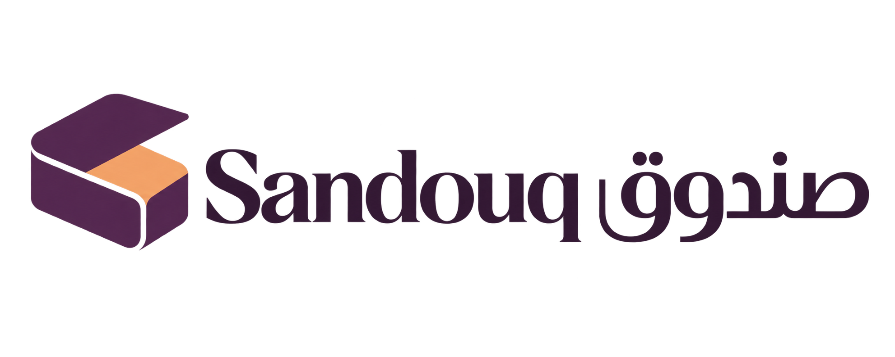

Sandouq صندوق

Vision
A future where promising ideas gain the shelter, resources, and patient structure needed to become independent ventures. Sandouq would hold a growing portfolio of experiments, giving each one room to prove its value before it leaves the container.
مستقبل تجد فيه الأفكار الواعدة الحماية والموارد والبنية الصبورة التي تحتاجها لتصبح مشاريع مستقلة. يحتضن صندوق محفظة متنامية من التجارب، ويمنح كل تجربة مساحة لإثبات قيمتها قبل أن تغادر الحاضنة.
Brand approach
Frame Sandouq as a venture container that reveals value over time. Layered forms, an unexpected interior, and stewardly language communicate patient building without resembling a financial fund.
يُصاغ صندوق كحاضنة مشاريع تكشف القيمة مع الوقت. تنقل الطبقات والداخل المفاجئ ولغة الرعاية معنى البناء الصبور، من دون أن تبدو العلامة صندوقًا استثماريًا ماليًا.
Color roles
#512A55
#F3A76F
#FFF9EF
#352038
#806C82
Usage
Keep the generated logo proportions. Use a clear area equal to at least the symbol height around the logo. Retain the original files and review legibility at the actual intended size. The raster logo is a concept; final production needs vector redraw, responsive small-size variants, Arabic proofreading and print specifications.
What is included
Three built-in image-generator originals: transparent logo exploration, identity application world, full-page landing concept. Eight individual application layouts in editable HTML, PNG and WebP. A responsive working landing page, English/Arabic copy, palette tokens, generation briefs and provenance records and font licenses.
Strengths
- Expandable as portfolio brand
- Tangible symbol with many creative routes
- Easy to explain
- Strong parent-brand metaphor
Weaknesses & watchouts
- Generic noun and crowded search likely
- Fund/investment connotations may mislead
- May sound like shipping/storage
- Commercial-name clearance could be difficult
Provenance
The three originals were generated with the built-in image tool. Individual applications were rendered from HTML with that generated logo. Working landing HTML is an interpretation of the brand strategy and generated world, not a pixel-for-pixel reconstruction of the image concept.
Production handoff
Exact generated-image text may need correction before release. Use brand-copy.json for canonical bilingual copy. Contact addresses use reserved .example domains. Name, trademark, trade-name, domain and social-handle clearance remains pending. No market-performance claims, clients or results are implied.